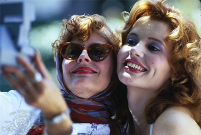
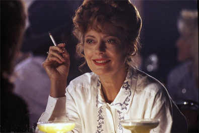
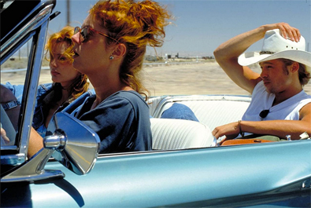
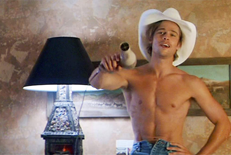
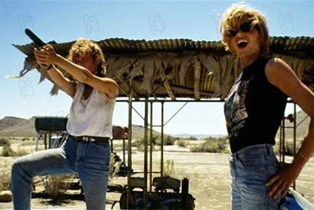
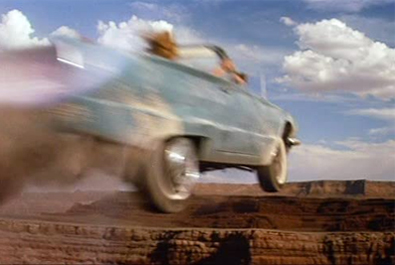

Ridley Scott
Mimi Polk Gitlin
Callie Khouri


Thelma Dickinson
Louise Sawyer
Jimmy Lennox
J.D.


Callie Khouri, then a music video producer, got the idea for Thelma & Louise in the spring of 1988 when she was driving home from work to her apartment in Santa Monica. She intended it to be a low-budget independent film, directed by herself but, after shopping the project around and finding no takers, her friend Mimi Polk Gitlin (who had been co-producer to Someone To Watch Over Me) showed the script to Scott, who expressed great enthusiasm for the project. He agreed to produce the film and bought the film rights for $500,000.
Scott was reluctant to direct the film himself but eventually took on the role, having been persuaded by Michelle Pfeiffer - originally chosen as one of the leads - to do so. She had been chosen, along with Jodie Foster, for the title roles. However, as pre-production of the film dragged on, the two eventually dropped out, with Pfeiffer going on to star in Love Field and Foster in The Silence of the Lambs. Meryl Streep and Goldie Hawn then offered to play the leads, but Streep later dropped out due to scheduling conflicts while Hawn was not considered right for the part. Geena Davis (who had been vigorously pursuing the lead role for nearly a year) and Susan Sarandon were ultimately chosen. The two took extensive driving and shooting lessons in preparation for their roles.
Principal photography for Thelma & Louise began on 11 June 1990, and concluded at the end of August. Although the setting for the film is a fictional route between Arkansas and the Grand Canyon, it was filmed almost entirely in the states of California and Utah. The primary filming locations were rural areas around Bakersfield, California and Moab, Utah. The Grand Canyon scenes were filmed just south of Dead Horse Point State Park in Utah. Parts of the film were also shot at Shafer Overlook, Monument Valley, La Sal Mountains, La Sal Junction, Cisco, Old Valley City Reservoir, Thompson Springs, Arches National Park and Crescent Junction in Utah.
Numerous critics and writers have remarked on the strong feminist overtones of Thelma & Louise. Film critic B. Ruby Rich praised the film as an uncompromising validation of women's experiences, while Kenneth Turan called it a "neo-feminist road movie". However, the film also received harsh criticism from those who thought it was biased against men and that its depictions of men were unfairly negative.

